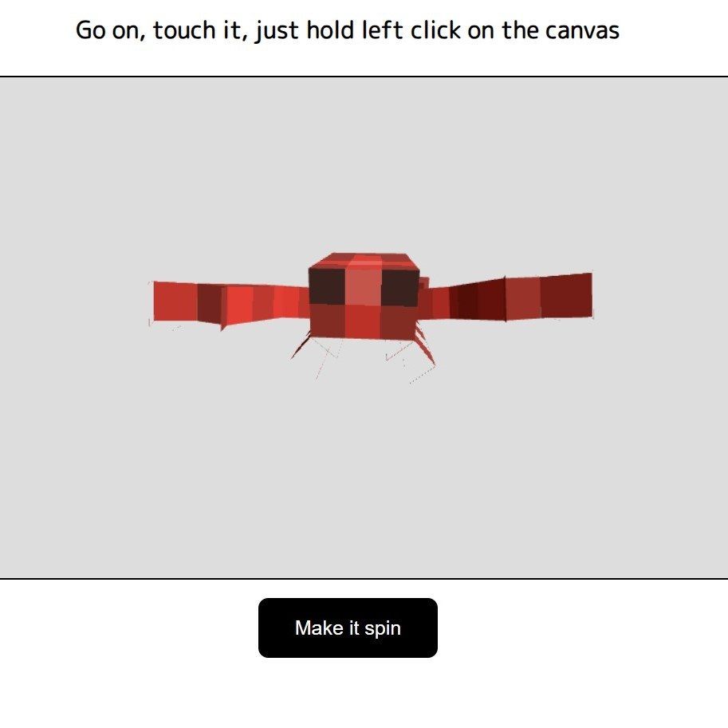

3JS
Here's a demonstration of my skills in Three.js, a cross-browser JavaScript library and API used to create and display animated 3D computer graphics in a web browser. Although I didn't create the model, the task was to showcase my ability to manipulate 3D objects and, for example, add navigation features to them. On this website, you can interact with the model, manipulating it using mouse.
